Date published: 19 December 2023
Why Should You Backup Your Website?
Ask yourself a question: when was the last time you backed up your WordPress website? Hopefully the answer is not “three years ago”, or worse still, “never”!
Imagine spending weeks or months on building your website, only to lose all the results of your hard work forever 😭
One of the most common reasons for losing your website is not renewing your hosting plan. If your hosting subscription expires, then your website may be unretrievable, as hosting providers do not keep archives of your website indefinitely, if at all. You could also lose your website if it suffers from a serious error such as a plugin failure or corrupted files.
Hopefully you will never experience any of the above, but always be prepared and don't fall into the trap of not keeping copies of your content!
Note: if your website is on a 'managed WordPress' plan, backups will usually be made automatically for you on a daily basis. If not, read on to find out how to carry out the process manually.
How to Perform a Backup on WordPress
- From the WordPress admin, go to Plugins > Add New Plugin. 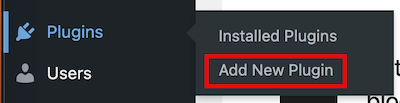
- In the search box, type in UpdraftPlus. 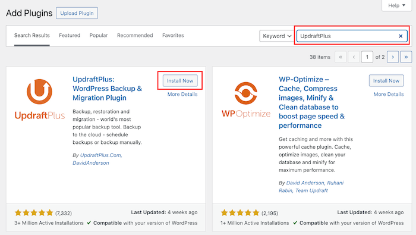
- Activate the plugin. 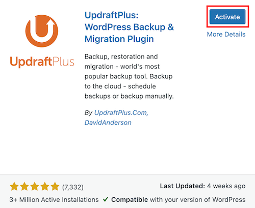
- Click Press here to start! 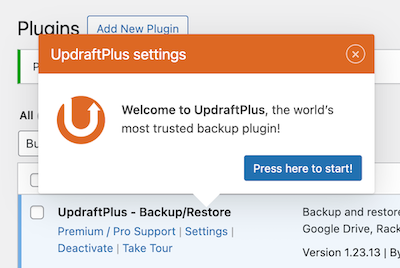
- Click the Settings tab. 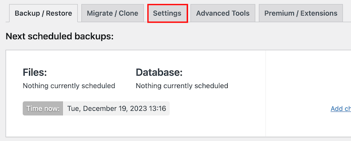
- Choose a remote storage location, then click Save Changes in the top right-hand corner. Please note that the following steps use Google Drive as an example location for storing the backups. If you choose a different option, the process will vary. 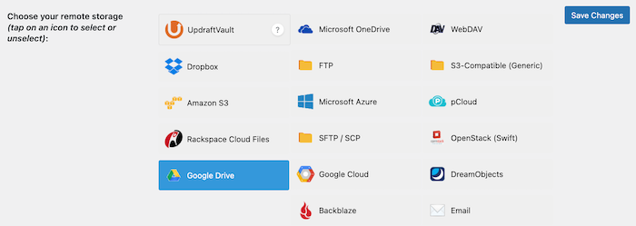
- This box will appear. Click Sign in with Google. 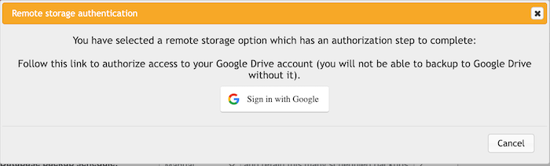
- Select the Google account you want the backups to be stored in. 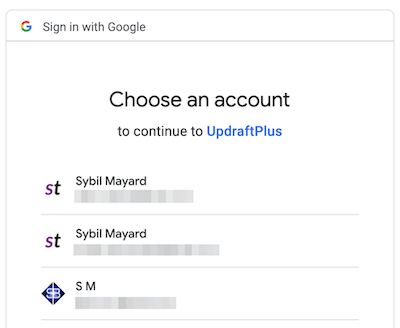
- Click Allow. 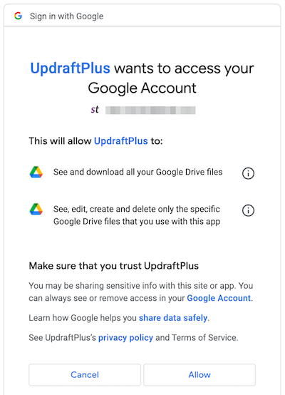
- You will see this screen. Click Complete setup. 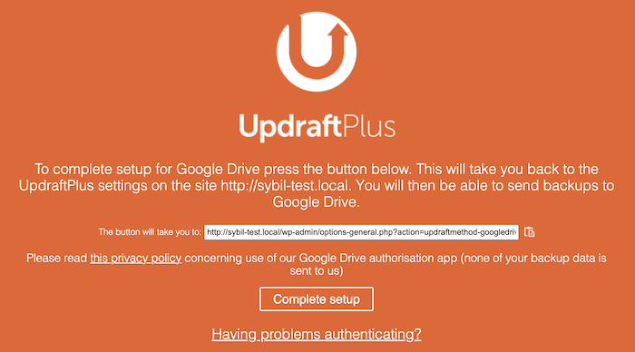
- Click the Backup Now button. How long the process takes to complete depends on the amount of content your website has. Your backup files will be stored in a new folder in Google Drive, called UpdraftPlus. 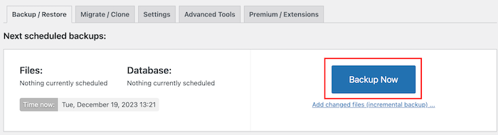
Best Practices
In all cases, regardless of which website builder you are using, it is highly recommended to store at least three copies of your backups:
- One on your local computer,
- One in the cloud,
- One on an external hard drive. Or even multiple hard drives, stored in different physical locations.
The more copies, the better!
You should also make a backup on a regular basis. Once a week is reasonable. It's also a good idea to make a backup before updating plugins and core WordPress files. For more information, refer to my guide, A Guide to Updating Your WordPress Website.
Conclusion
Backing up your website is an important aspect of your website maintenance activities. It's likely that you'll have spent a great deal of time and money on developing your website, so it's vital to have a copy of your website's content in case of loss of data. In this article we discussed the processing for backing up your website on WordPress using the UpdraftPlus plugin.